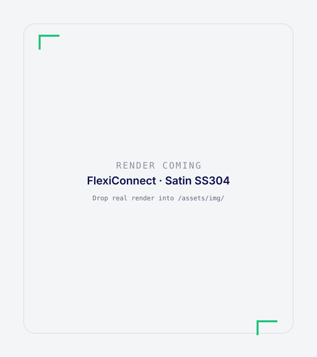
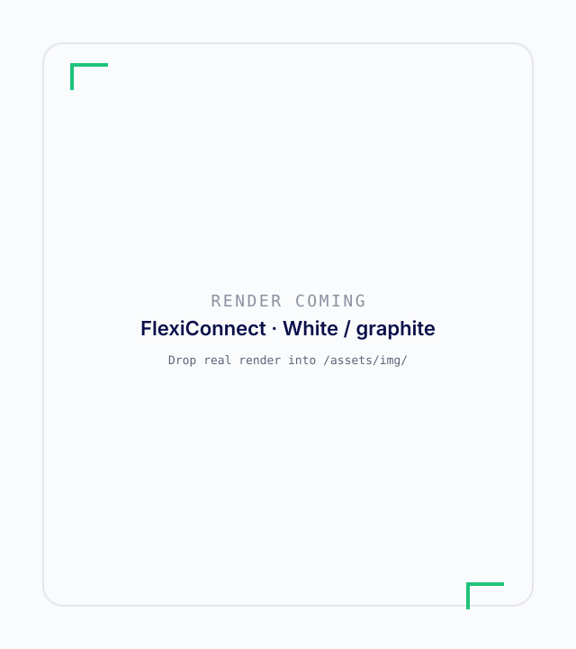

Connect
Wire RTDs, analog and digital I/O, and serial instruments into FlexiConnect. Front LEMO for sensors and actuators; back panel for communications.
FlexiConnect senses, decides and acts on live chemistry, on the reactor you already own, with a record of every move.
Reads the reaction as it happens: temperatures, stirrer signals, pump flow and balance weight. Every reading is timestamped and carries a quality flag.
The C99 control engine on the STM32H7 runs the recipe at a 10 ms tick. Holds extend, doses slow, and safe states engage without waiting on the cloud.
Adjusts ramps, holds and doses, or brings the reactor to a safe state, and logs why it did it.
Illustrative loop. Optimisation and anomaly detection are on the roadmap.
FlexiFlow is the retrofit. FlexiConnect is the controller that sits beside the vessel you already own.
Wire RTDs, analog and digital I/O, and serial instruments into FlexiConnect. Front LEMO for sensors and actuators; back panel for communications.
Load a crystallisation or process recipe. The controller executes ramps, holds, seeding and dosing on a 10 ms tick.
Every step, sensor value and operator action is written into a Part 11-style audit log you can take away as proof.
Overnight cooling and antisolvent steps are where unattended control and a signed record matter most.
An industrial stainless controller with a lab finish. It sits beside the reactor and wires into everything around it.

brushed stainless body

powder-coat body · graphite panel
Placeholder frames. Drop final product renders into /assets/img/. Full hardware →
Flagship example: cooling + antisolvent crystallisation adapted from Pickles et al., CrystEngComm 2024. Ten published recipes in the casebook.
example_recipe · 7 steps · ~10 h · illustrative
Adapted from Pickles et al., CrystEngComm 2024. Illustrative, not a validated procedure. Recipes page →
A missing reading stops the step. It never passes it.
No moving on until the right amount is in.
A person decides what happens next.
Works even if the software does not.
This is a roadmap, not a feature list. Only “Today” describes current product scope.
Recipes run unattended, and every reading and action is logged for audits.
Anomaly and exotherm alerts, so trouble is flagged before it becomes a failed batch.
Self-tuning control learned from your own runs.
Reactors that plan, run and improve experiments with scientists in charge.
Ship your glass reactors with a controller that senses, decides and records, without building the electronics yourself.
OEM partnershipTell us about your lab, your vessels and what you would hand over to the machine.
Request a demo